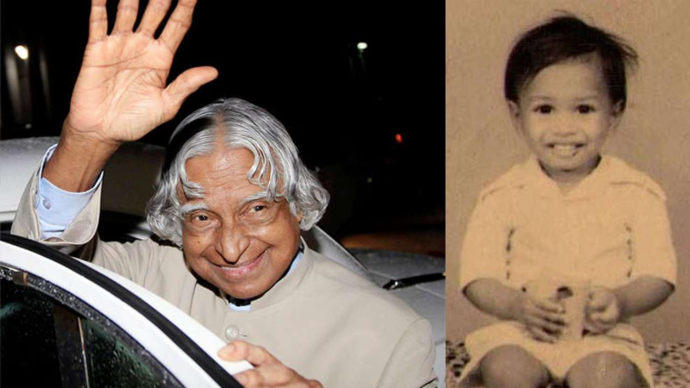
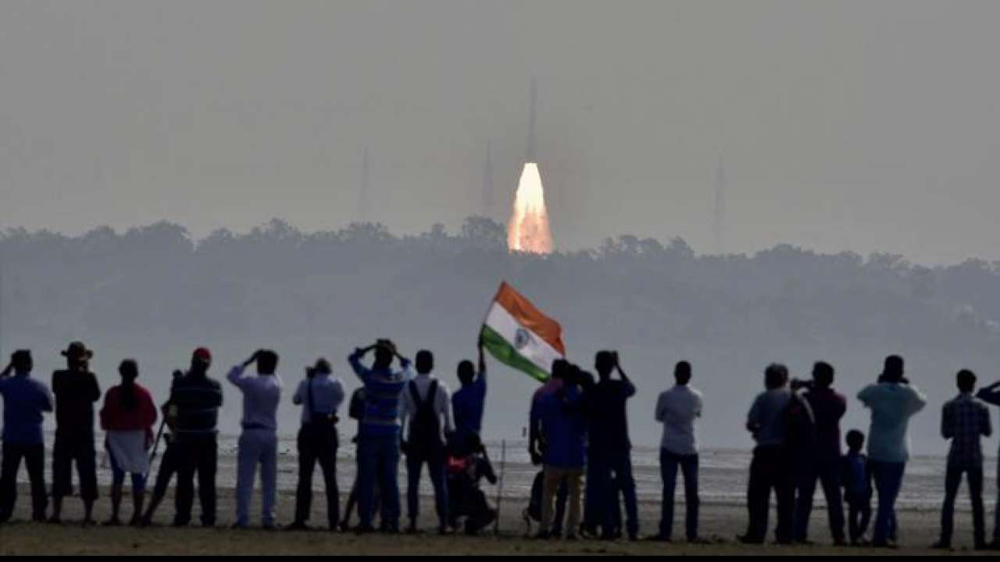
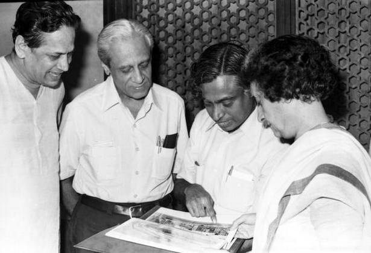
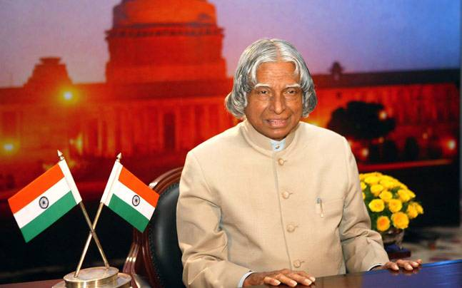
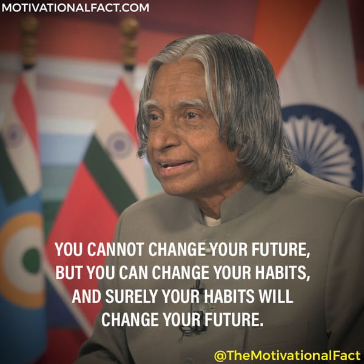

A very simple person who lived an unpretentious lifestyle. He had a
keen interest in literature and wrote poems. He never married. He
always faced media himself for his failures while let others address
for the success. He remained active till the very end. He died while
delivering a lecture at the IIM.
1931 - Born in Rameswaram, Tamil
Nadu.

Dr APJ Kalam was born on October 15, 1931, in Tamil Nadu's Rameswaram
1954 - Graduated in Physics from
University of Madras.
1960 - Graduated in Aerospace
Engineering from Madras Institute of Technology.
1961 - Joined DRDO as a
scientist.
1969 - Joined Space Research at
ISRO.

Kalam has worked with India's space program
1980 - Became the project
Director for India's First Indegenous Satellite Program.

1980 :: Scientist A.P.J Abdul Kalam Showing Photos of
SLV-3 Project to PM Indira Gandhi.
1980 - Was involved in the
development of several Indegenous Missiles for India like Agni,
Prithvi.
1981 - Awarded Padma Bhushan.
1990 - Awarded Padma Vibhushan.
1992 - Chief Advisor for the
India's Nuclear Program.
1997 - Awarded Bharat Ratna.
Kalam was honoured with 'Bharat Ratna' in 1997
2002 - Became 11th President of
India.

Served as President of India from 2002-2007
2015 - The People's President
passes away while doing what he loved the most, addressing
students.

Inspring quotes
" Look at the sky. We are not alone. The whole universe is friendly
to us and conspires only to give the best to those who dream and
work. "
- Dr. A.P.J. Kalam